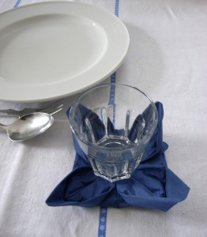

Gracias a Bilge hemos aprendido a plegar servilletas y dejar la mesa con una decoración muy bonita.
Thanks to Bilge we learned to fold servicings to decorate the table in a very special way.
Dank Bilge, haben wir gelernt Servietten zu falten, um den Tisch ganz besonders schön zu dekorieren.